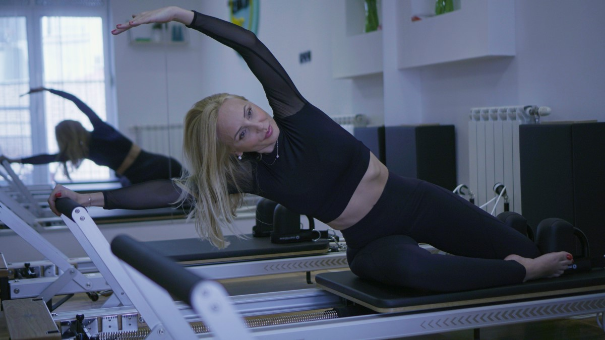

Pilates na STOTT® Reformer mašinama se radi u malim grupama (do četiri osobe). Fokus treninga je na jačanju CORE-a (unutrašnjih mišića abdomena) kao i jačanju celokupnog zglobno-koštano-mišićnog sistema. Pilates daje pravilno držanje i kretanje tela i unapređuje zdravlje kičme. Rezultat je lepo oblikovano, zdravo, snažno i gipko telo. Kroz Reformer ćete osetiti pilates pokret, osvestiti ga, uživati u njemu, a rezultati će svakako doći. Dođite i probajte umetnost Pilatesa na Reformeru.
Individualni trening prilagođen je potrebama pojedinaca. Preporučujemo ih profesionalnim sportistima, trudnicama, klijentima sa posturalnim potrebama kao i svima koji žele da postavljene ciljeve postignu brže.
Individualni treninzi se rade u periodu od 13h do 16h svakim radnim danom. Subotom od 14h (u dogovoru sa klijentom)
Poluindividualni treninzi su koncipirani za vežbanje u paru. Da li vežbali sa drugaricom, ćerkom ili pratnerom ovaj trening posvećujemo potrebama oba klijenta.
Poluindividualni treninzi se rade takođe u periodu od 13h do 16h svakim radnim danom. Subotom posle 14h (u dogovoru sa klijentima)